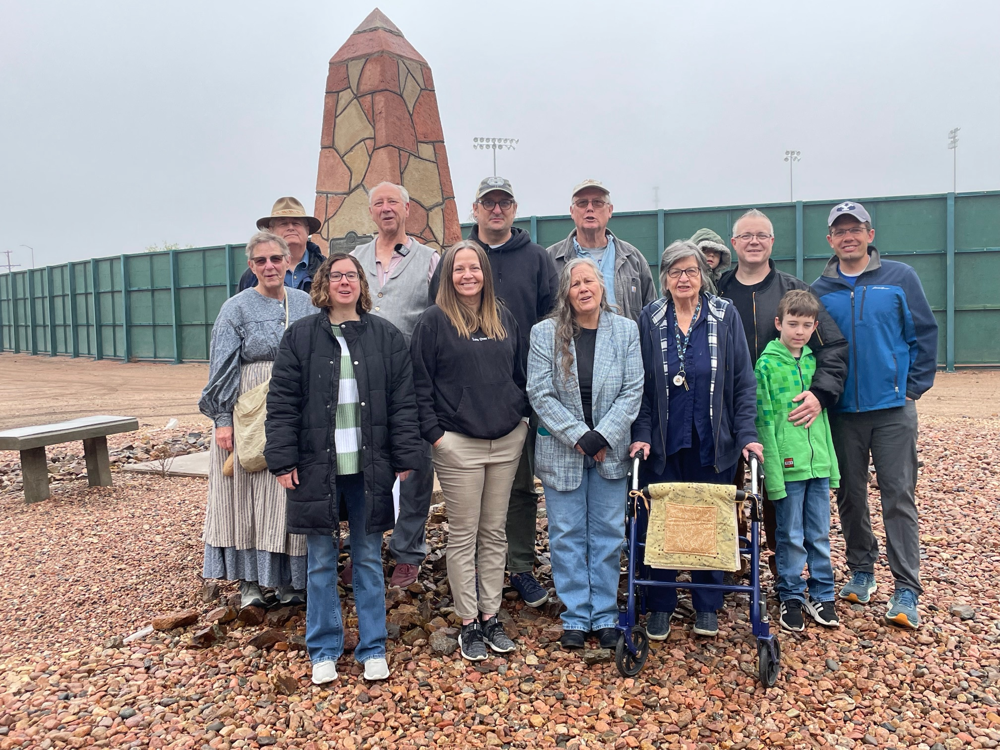

As always happens, people who are hearing the story for the first time have lots of questions and those who are descendants have a certain pride and deservedly so. There was a notice in The Pueblo Chieftain in their “Things to do in Pueblo This Weekend” Section, so some people came because they read about it in the paper.
We met Dennis Chappell, a high-level reenactor who used to participate at Old Bent’s Fort. He was friends with David Jamiel who we knew. David was a great historian of the Battalion and other time periods who passed away several years ago. He knew a lot about Pueblo and is sorely missed by all those who knew him. Dennis was kind enough to let me record him sharing the history of Bent’s Fort so I will share that in our podcast as soon as I can. What a treat!
My prayers were answered and it was a cool day for walking in pioneer clothes. With all the preparations my “training schedule” had taken a real hit so I was a little worried about going the five miles. The cool weather helped and I know I’ll get stronger. Kevin says the Battalion and Mississippi Saints were really moving quickly once they left so I wondered about those women. Did they have a few aches and pains after wintering in small cabins trying to walk long distances? Did they ride horses? Were they in wagons? I can’t imagine they had much stamina when they first started. They probably had to work up to it also. I’m not sore – just tired. This is good.
We had decided to start off the Trek in period clothes. It just seemed “right.” I was immediately reminded of how the wind catches pioneer dresses with the slip and the yards of fabric either acting as a sail, or wrapping between my legs making it hard to walk. I felt like I was back in Kansas in 2008. I wore my slat bonnet which I’m so excited to have! There were a few times the sun peeked out so it was definitely needed.
As we walked along the river trail, the vegetation was beautiful. After two hours of walking, we were getting hungry and as I looked up, high in the sky I saw a huge Golden Arches sign. I laughed and told Kevin, “Now, there’s something the Battalion women didn’t see! They probably didn’t have huge signs pointing ‘Food Here!’”. The trees along the river were very dense. It surprised me to see cactus there too.
I felt very pioneer-y when we got home because Kevin had lost a button on his suspenders so here I was, first day out, mending clothing and sewing on a button. It was very relaxing and I enjoyed it. I only brought one needle, and the thread I packed was button & carpet thread so it almost didn’t go through the eye of the needle, but I got it done. That thread is so thick and strong – I’d be surprised if I have to sew on any more buttons this trip.
The sad part of the day was I lost one of the tiny receivers for my audio system! We went back and looked at all the places we had been yesterday but to no avail. I feel terrible about it. Fortunately for me, two came in the package. I’ll be ultra careful – the Velcro on the bag didn’t seal all the way so that may have been part of the problem. I have a new bag that zips shut now. I’m really heartsick about it. I was SO excited to have it.
Dinner was cooked outside and we ate at the campsite picnic table gazing up at the big limestone bluffs which is the view from our “back yard.” The sunset again over the lake was spectacular. Mother Nature sure knows how to put on a show!
